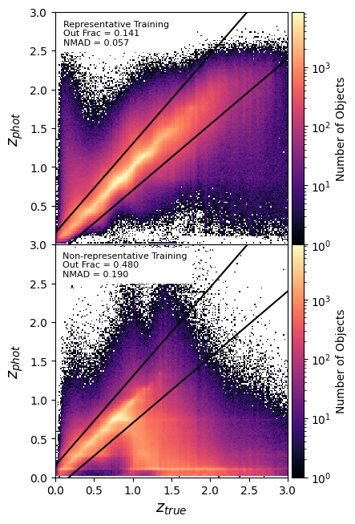
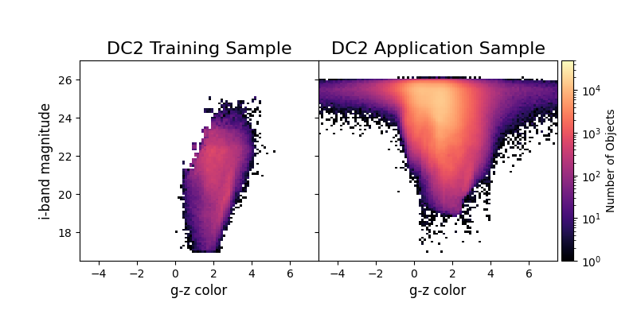

Motivation
When spectra aren't available for measuring redshifts, they can be estimated using photometry, called photometric redshifts, or photo-z's. There are two primary ways of estimating photo-z's: template-fitting and machine learning. Template fitting methods require a set of galaxy SED templates and the filter transmission curves for your data set as inputs. The photometry in each band can then be calculated from each SED in the template set at various redshifts. For each galaxy in your photometric sample, the photometry is compared to the photometry generated from the SED template set to find the best fitting template and redshift. In the case of machine learning, an input training sample with both photometry and spectroscopic redshifts is required. This training sample is then used to learn the relationship between the photometry and redshift using your favorite machine learning algorithm. The learned relationship is then applied to your photometric data to estimate redshifts.
The reliance of machine learning methods on a spectroscopic tranining sample requires that training sample to be representative of the data you want to estimate redshifts for. However, existing spectroscopic catalogs are not representative of anticipated LSST data. Spectra are easier to obtain for brighter, redder galaxies, which also tend to be at lower redshift. Even DESI, which will obtain large quantities of high quality spectra, won't be as deep as LSST, meaning that LSST will be reliant on non-representative training samples for photo-z estimation. A non-representative training sample would lead to catastrophically poor photo-z estimates for a large portion of LSST galaxies, leading to reduced constraining power and bias in cosmological parameters obtained from LSST data. The image on the right shows what photo-z estimation could look like if this problem is not addressed. Each panel shows the true redshift on the x-axis vs the photo-z estimate on the y-axis. The top panel shows the photo-z estimates for a sample of simulated LSST-like galaxies when a fully representative training sample was used. The bottom panel shows the photo-z estimates for the sample sample of simulated galaies, but when a realistically non-representative training sample is used. In the non-representative case, the outlier fraction reaches nearly 50%. It is thus very important to find a way to improve the photo-z estimates without relying on a large volume of new spectra for training.
Methodology
The basic idea is to see if we can add simulated galaxies to the training sample to cover previously unrepresented regions of photometry and redshift. To test this idea, we use two simulations. The DC2 simulation is a stand-in for real LSST data, and we split this into an LSST-like data sample and a training sample with photometry and redshifts like HSC galaxies with matched spectroscopic redshifts. This is the training sample used to estimate photo-z's in the above plot. Color magnitude diagrams of these two samples are also shown in the figure on the left. To mimic adding simulated data to a training sample of real data, we need a second simulation that generates galaxy SEDs in an independent way from the DC2 simulation. This difference between the two simulations mimics the difference between one simulation and real data. For this second simulation, we use the Buzzard simulation.
To identify regions for augmenting, we use the i-band magnitudes and g-z colors to make a color-magnitude diagram of the training sample. We use three photometric selection criteria: dim galaxies (i-band > 23) blue galaxies, (g-z color < 1.75) or a set of two lines fit to the shape of the top of the CMD of the training sample. These photometric selection criteria can also be combined with a redshift selection criterion. Since the training sample has very few galaxies with redshift above 1.0, we can also select galaxies with z > 1.0. For each set of selection criteria, we select 10,000 galaxies from the Buzzard catalog that satisfy the selection criteria and add them to the initial training sample. We then retrain the photo-z model and estimate a new set of photo-z's for the application sample. We then calculate the outlier fraction, NMAD, bias and catastrophic outlier fraction for the resulting photo-z estimates to compare the different trainings.
Results
The most restrictive set of selection criteria, combing the color and magnitude selection with a redshift selection, produces the best photo-z's, shown below. The training sample obtained with this selection is also shown. The outlier fraction is reduced from the unaugmented value by ~50%. When considering the fact that the outlier fraction of the fully representative training sample isn't actually 0%, the augmentation can recover nearly 70% of the difference with the fully representative case. As a proof-of-concept exercise with fairly simple selection criteria, this is incredibly successful!